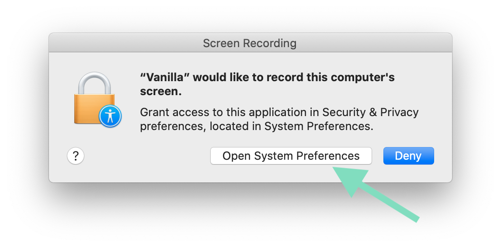
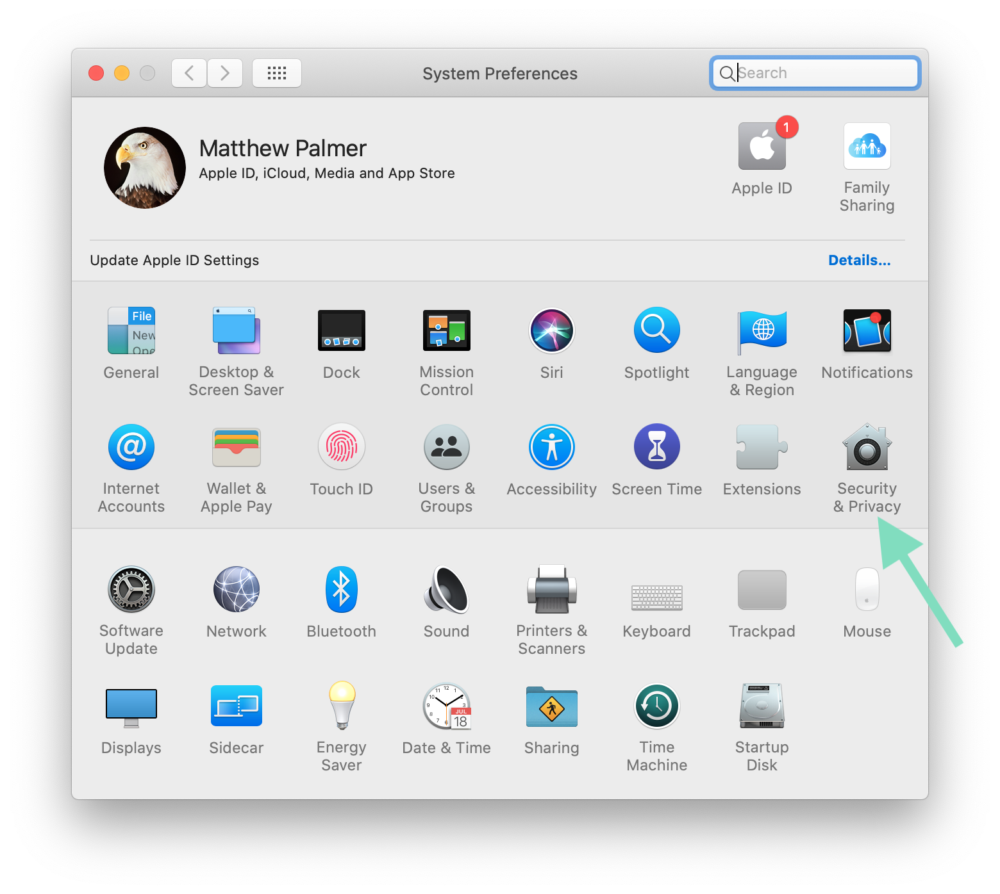
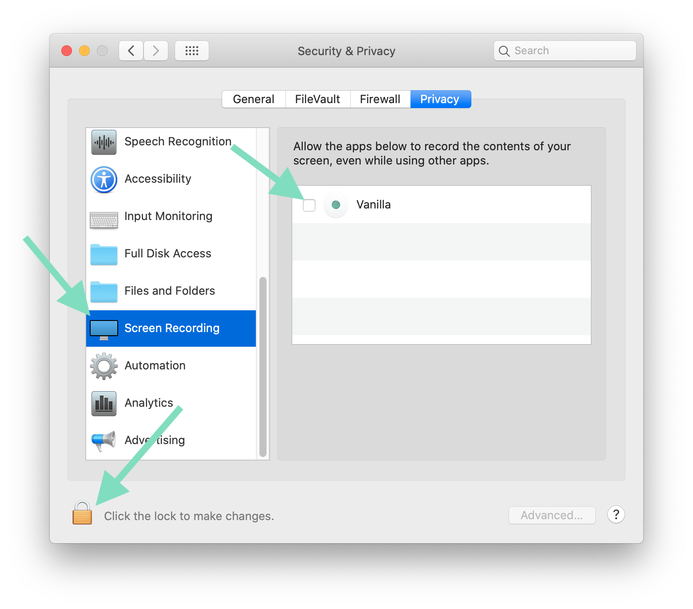

Vanilla – Screen Recording Permission on macOS Catalina
Starting from macOS Catalina, Vanilla requires Screen Recording permission to be able to hide icons on your Mac. This is a change to the way the Mac’s permissions system works, not a change to Vanilla’s functionality.
Vanilla does not record your screen.
Vanilla takes screenshots of your menu bar to hide icons. There is no personal information in these screenshots. The screenshots are not saved or transmitted anywhere.
The app uses the screenshot to blend in the menu bar with the icons inside the menu bar to create a seamless, minimalist menu bar with fewer icons.
How do I enable Screen Recording permission for Vanilla?
1. When you first start Vanilla on macOS Catalina, you’ll be prompted to enable the Screen Recording permission. You’ll also be prompted to enable Screen Recording if you disable the permission later.
Click ‘Continue’ to proceed. (Or quit Vanilla if you don’t want to use it.)

2. macOS will prompt you to enable permission for Vanilla to record your screen. Click ‘Open System Preferences’.
If macOS doesn’t prompt you, or you get stuck on Vanilla’s “Enable Vanilla” screen, open System Preferences manually, click the Security and Privacy icon and choose ‘Screen Recording’ in the sidebar.
4. In the Screen Recording section, check the checkbox next to Vanilla. You may need to click the lock in the bottom left to allow editing. Quit Vanilla when macOS prompts you to.
5. Open Vanilla again
Does Vanilla store or transmit any screenshots?
Vanilla does not store or transmit any of these screenshots. We use these screenshots to create a seamless blending effect between your icons and your menu bar.
Vanilla accesses the internet only to check for updates and validate Pro license codes.
Does Vanilla access any personal data or information?
Vanilla does not access or read any personal information – these screenshots are of your menu bar and your Desktop image. In fact, the screenshots are only of the top 50 pixels of your screen.
How do I contact you?
Feel free to contact me any time via email at matt@matthewpalmer.net or on Twitter.